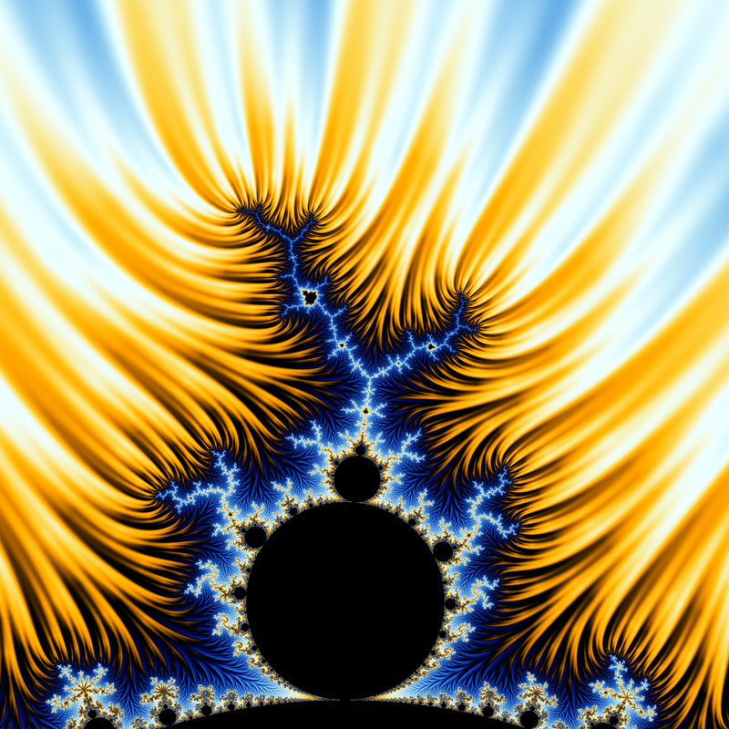

Note
Click here to download the full example code
03 - Bulb fieldlines example “twinfield”
This example shows one of the ways to plot fieldlines: here the fieldlines values are used to modify the original layer values before applying the colormap.
The location is around the 1/3 main bulb.
Reference:
fractalshades.models.Mandelbrot

import os
import numpy as np
import fractalshades as fs
import fractalshades.models as fsm
import fractalshades.colors as fscolors
from fractalshades.postproc import (
Postproc_batch,
Continuous_iter_pp,
Fieldlines_pp,
Raw_pp,
)
from fractalshades.colors.layers import (
Color_layer,
Bool_layer,
Virtual_layer
)
def plot(plot_dir):
"""
Using field lines : a shallow zoom in the Seahorses valley
Coloring based on continuous iteration + fieldlines
"""
# Define the parameters for this calculation
x = -0.10658790036
y = 0.96946619217
dx = 0.6947111395902539
nx = 2400
calc_name="mandelbrot"
colormap = fscolors.cmap_register["classic"]
# Run the calculation
f = fsm.Mandelbrot(plot_dir)
f.zoom(x=x, y=y, dx=dx, nx=nx, xy_ratio=1.0,
theta_deg=0., projection="cartesian", antialiasing=False)
f.base_calc(
calc_name=calc_name,
subset=None,
max_iter=5000,
M_divergence=100.,
epsilon_stationnary= 0.001,
)
# f.clean_up(calc_name)
f.run()
# Plot the image
pp = Postproc_batch(f, calc_name)
pp.add_postproc("cont_iter", Continuous_iter_pp())
pp.add_postproc("interior", Raw_pp("stop_reason", func="x != 1."))
pp.add_postproc("fieldlines",
Fieldlines_pp(n_iter=3, swirl=0., damping_ratio=0.2))
plotter = fs.Fractal_plotter(pp)
plotter.add_layer(Bool_layer("interior", output=False))
plotter.add_layer(Color_layer(
"cont_iter",
func="np.log(x)",
colormap=colormap,
probes_z=[0.4, 2.4],
probes_kind="absolute",
output=True
))
plotter.add_layer(Virtual_layer("fieldlines", func=None, output=False))
plotter["cont_iter"].set_mask(plotter["interior"], mask_color=(0., 0., 0.))
# This is the line where we indicate that coloring is a combination of
# "Continuous iteration" and "fieldines values"
plotter["cont_iter"].set_twin_field(plotter["fieldlines"], -0.08)
plotter.plot()
if __name__ == "__main__":
# Some magic to get the directory for plotting: with a name that matches
# the file or a temporary dir if we are building the documentation
try:
realpath = os.path.realpath(__file__)
plot_dir = os.path.splitext(realpath)[0]
plot(plot_dir)
except NameError:
import tempfile
with tempfile.TemporaryDirectory() as plot_dir:
fs.utils.exec_no_output(plot, plot_dir)
Total running time of the script: ( 0 minutes 5.225 seconds)